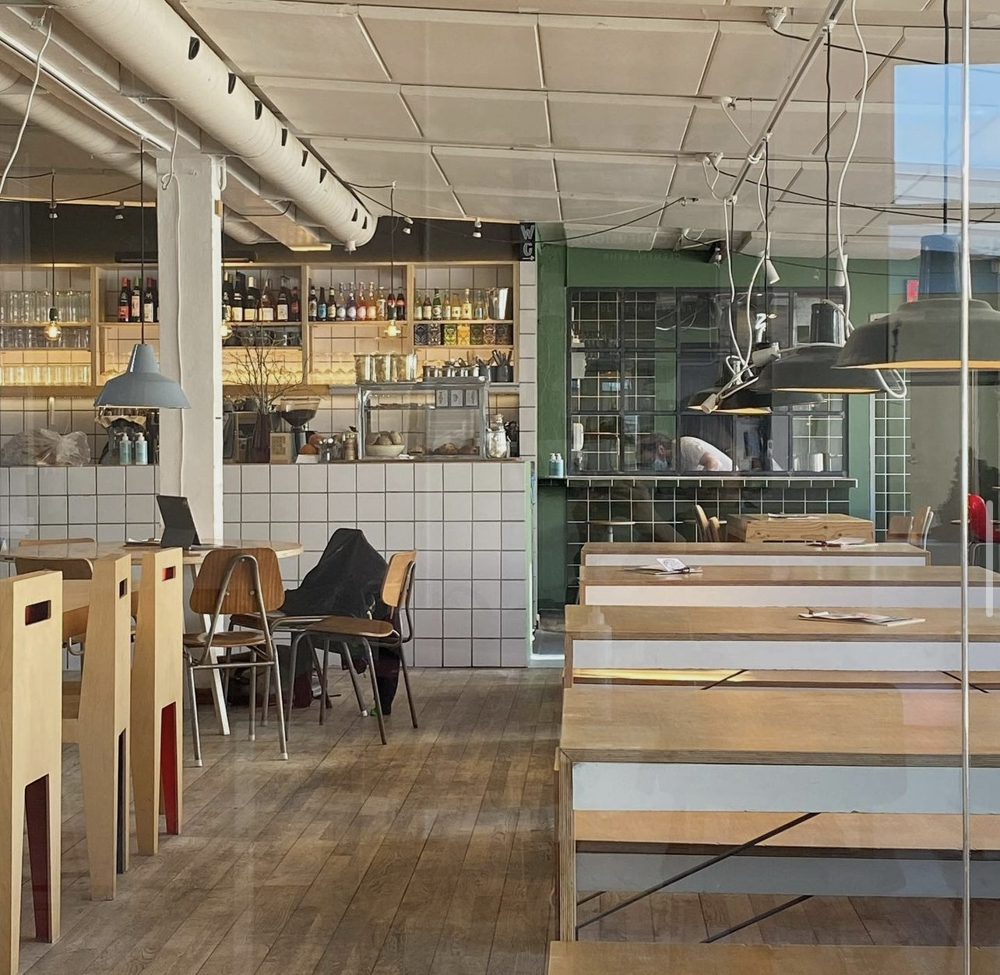

BYENS CAFEER
DIN ULTIMATIVE GUIDE OVER CAFÉER OG LÆSESTEDER I AARHUS. UANSET OM DU LEDER EFTER DEN PERFEKTE KOP KAFFE, ET HYGGELIGT HJØRNE TIL AT FORDYBE DIG I EN GOD BOG, ELLER ET INSPIRERENDE STED TIL STUDIER, HAR VI SAMLET DE BEDSTE SPOTS I BYEN. UDFORSK VORES ANBEFALINGER OG FIND DIT NYE FAVORITSTED I AARHUS' PULSERENDE CAFÉLIV.
CARTER
CARTER CAFÉ ER EN HYGGE OG CHARMERENDE CAFÉ BELIGGENDE I HJERTET AF AARHUS. CAFÉEN ER KENDT FOR SIN AFSLAPPEDE ATMOSFÆRE, STILFULDE INDRETNING OG VENLIGE BETJENING, HVILKET GØR DEN TIL ET POPULÆRT TILHOLDSSTED FOR BÅDE LOKALE OG TURISTER.
CAFÉEN HAR OGSÅ ET STORT UDVALG AF DRIKKEVARER, HERUNDER FRISKPRESSET JUICE, SMOOTHIES OG FORSKELLIGE VINE OG COCKTAILS, SOM GØR STEDET IDEELT TIL BÅDE MORGENKAFFE, FROKOSTMØDER ELLER EN AFSLAPPET AFTEN MED VENNERNE. CARTER CAFÉ TILBYDER BÅDE INDENDØRS OG UDENDØRS SIDDEPLADSER, SÅ DU KAN NYDE DEN HYGGE STEMNING INDE I CAFÉEN ELLER SLAPPE AF I SOLEN PÅ DERES UDENDØRS TERRASSE.
CARTER CAFÉ ER ET STED, HVOR MAN KAN KOMME FOR AT SLAPPE AF, ARBEJDE ELLER NYDE ET MÅLTID I HYGGE OMGIVELSER. MED EN BELIGGENHED CENTRALT I AARHUS ER CAFÉEN DET PERFEKTE STED AT MØDES, HVAD END DET ER TIL EN HURTIG KOP KAFFE ELLER EN LÆNGERE SAMMENKOMST.
LYNFABRIKKEN
LYNFABRIKKEN ER EN UNIK OG KREATIV CAFÉ BELIGGENDE I VESTERGADE-KVARTERET I AARHUS, KENDT FOR SIN KOMBINATION AF CAFÉ, ARBEJDSRUM OG KULTURELT MØDESTED. MED SIT ÅBNE OG LYSE DESIGN SKABER LYNFABRIKKEN EN AFSLAPPET ATMOSFÆRE, HVOR BÅDE PRODUKTIVITET OG HYGGE GÅR HÅND I HÅND.

PÅ LYNFABRIKKEN FINDER DU EN SIMPEL, MEN VELSMAGENDE MENU MED ET UDVALG AF FRISKLAVET KAFFE, TE, HJEMMEBAGTE KAGER OG LETTE
FROKOSTRETTER SOM SALATER, SANDWICHES OG TAPAS. DERUDOVER KAN DU NYDE KOLDE DRIKKEVARER SOM ØKOLOGISK JUICE OG SPECIALØL,
PERFEKT TIL AT SLAPPE AF MED EFTER EN LANG
UDOVER CAFÉEN FUNGERER LYNFABRIKKEN OGSÅ SOM ET KREATIVT COWORKING SPACE, HVOR FOLK KAN LEJE SIG IND I DERES KONTORPLADSER OG
STUDIERUM. DETTE GØR CAFÉEN TIL ET DYNAMISK STED, HVOR MENNESKER FRA FORSKELLIGE FAGOMRÅDER MØDES OG SKABER SAMARBEJDE OG
NETVÆRK.
MED SIT FOKUS PÅ FÆLLESSKAB, KREATIVITET OG BÆREDYGTIGHED ER LYNFABRIKKEN MERE END BARE EN CAFÉ—DET ER ET LEVENDE MØDESTED, HVOR IDÉER KAN GRO, OG MENNESKER KAN MØDES I INSPIRERENDE OMGIVELSER.